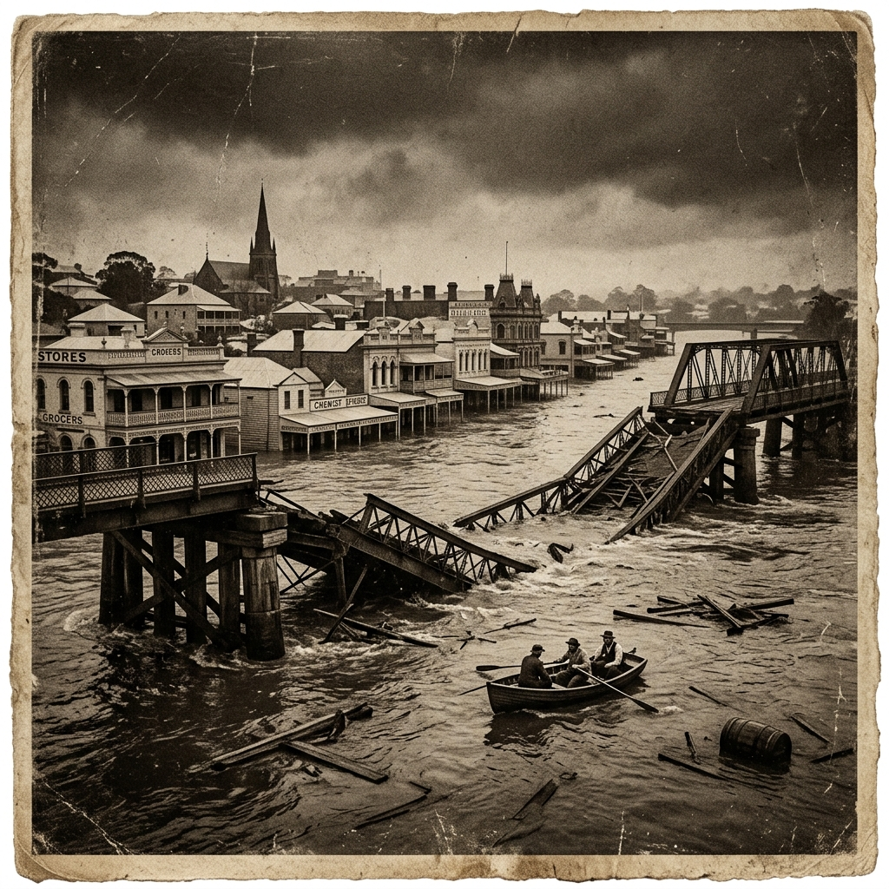
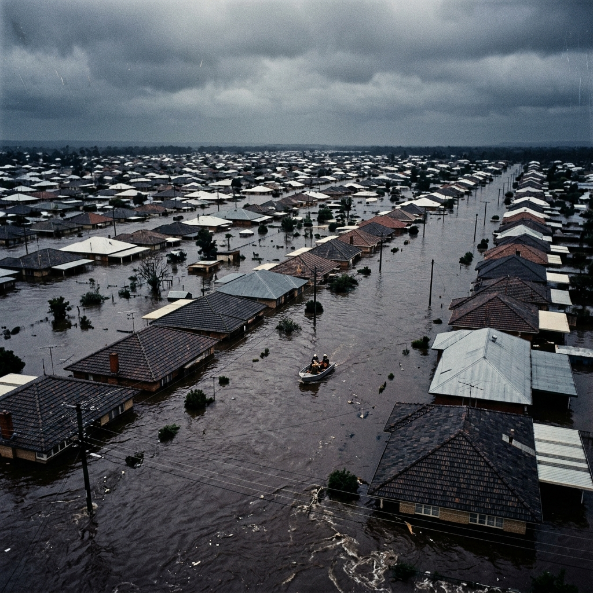
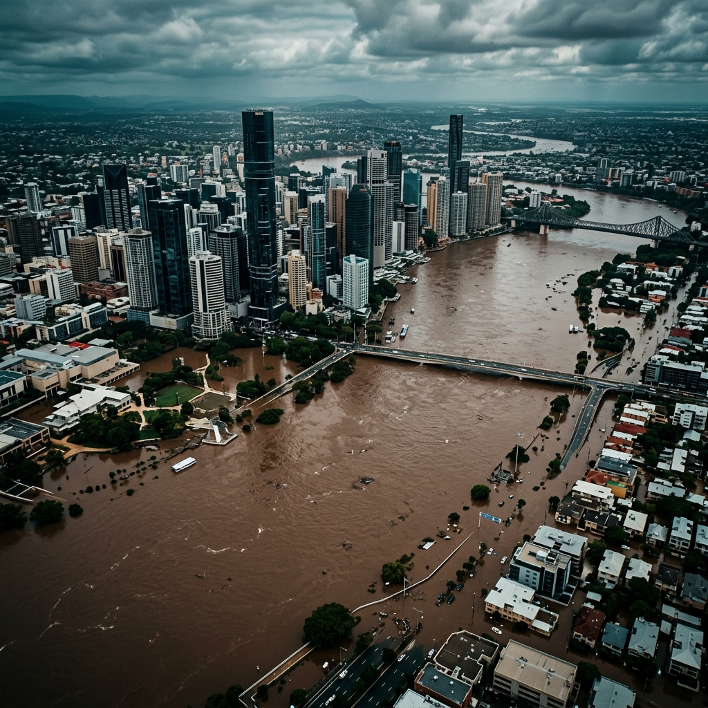
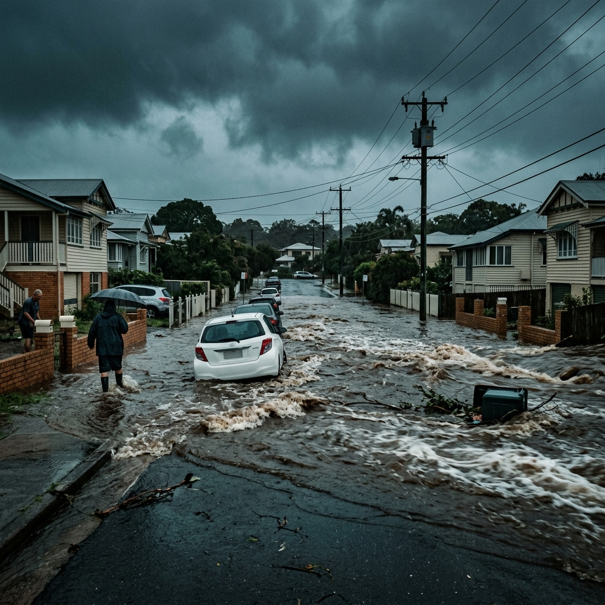

To understand flood risk in South East Queensland, we must look at the historical record. Over the past 130 years, four benchmark events have forced the city of Brisbane to redefine its relationship with the water.
A look at the Brisbane City Gauge records presents an interesting paradox. The peak flood heights have steadily decreased over time—but the human and economic impact has simultaneously widened.
The paradox of Brisbane flooding: the lowest gauge peak in modern history (2022) flooded the most properties.
1893 — "Black February"
The Great Flood
In February 1893, three separate floods hit Brisbane within weeks of each other, illustrating how successive events can occur within a single unpredictable wet season.[1] A tropical cyclone triggered extreme rainfall across the catchment, pushing the Brisbane River to an astonishing 8.35 metres at the City Gauge—the second-highest peak on record.

The sheer velocity of the water destroyed the Victoria Bridge and the Indooroopilly railway bridge. At least 11 people lost their lives, and the estimated damage was around £2,000,000—an extraordinary sum for the colonial era. During this event, Crohamhurst in the upper catchment recorded Australia's highest daily rainfall total to that date.
1974 — Cyclone Wanda
The End of Complacency
Before January 1974, an unusually wet spring had already saturated the vast Brisbane River catchment. When Cyclone Wanda arrived, it dragged a deeply unstable monsoonal trough over the region. Bureau of Meteorology records show a 5-day rainfall of 500–900 mm across the metropolitan area.

The river peaked at 5.45 metres, making it the largest flood to affect Brisbane in the twentieth century. Given the massive post-war expansion of the city onto the floodplain, the impact was unprecedented: approximately 8,500 homes were inundated.
The trauma of 1974 sparked a political and engineering response that changed South East Queensland forever—chiefly, the commitment to build Wivenhoe Dam.
2010–2011 — The Inland Sea
A State Built on Water
The 2010–2011 floods were not a single storm, but a season of accumulating disaster. Driven by a very strong La Niña, month after month of rainfall saturated every catchment in Queensland. By January, an astonishing 75% of the state was officially disaster-declared.

When the Brisbane River finally peaked at 4.46 metres in mid-January, the economic damage was staggering. 12,500 properties were inundated in Brisbane alone. A World Bank assessment put the total economic damages at roughly US$15.9 billion. Tragic loss of life occurred, particularly during the terrifying flash flooding events in the Lockyer Valley that preceded the main river peak.[3]
2022 — The Rain Bomb
The Compound Threat
In late February 2022, an atmospheric block trapped a severe weather system over South East Queensland. Over three days, the Brisbane local government area received an average of 795 mm of rain—some suburbs received over a metre. It became the city's second-wettest month on record, yielding a record-breaking 4-day catchment-average rainfall of 444.6 mm.

The Brisbane River city gauge peaked at 3.85 metres—lower than 2011. Yet, because of compound flooding (the simultaneous combination of river flooding, intense creek flooding, and overland stormwater flow), over 23,400 properties were affected. It flooded more properties than any event since 1974.
References
- ↑ Queensland Reconstruction Authority. (2019). Brisbane River Catchment Historical Factsheet.
- ↑ Bureau of Meteorology. (1975). Brisbane Floods January 1974 Report.
- ↑ World Bank. (2012). The World Bank Queensland Floods Assessment. Document Bank.
- ↑ Griffith University. (2023). Why was Brisbane's 2022 flood different? Griffith News.